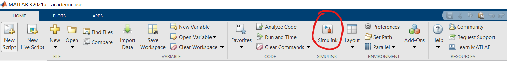
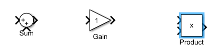
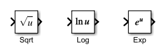
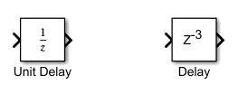
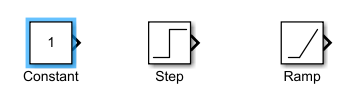
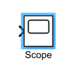
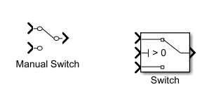
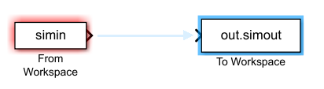
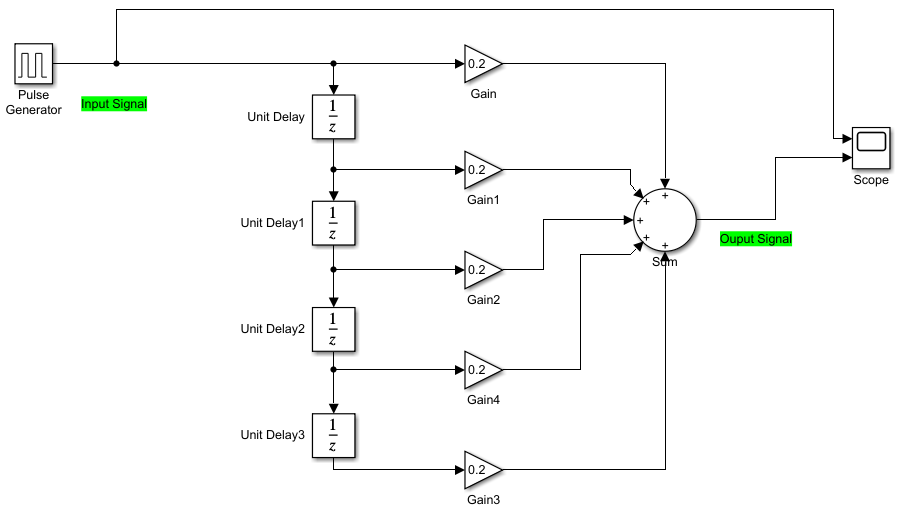
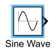

DSP Lab 06: Implementing digital systems in Simulink
1 Objective
Students should implement basic digital systems in the Simulink environment
2 Theoretical aspects
2.1 Simulink
Simulink is a graphical computational environment in Matlab, which can be used to design and simulate continuous and discrete signals and systems.
Simulink is opened from the Simulink button in the toolbar.

In Simulink one creates schematics of systems (“models”) based on predefined building blocks, which are available in the Library Browser.
Simulink model files are saved with extension “.slx”
2.2 Basic Simulink blocks for digital signal processing
A quick overview of basic blocks is provided in Figure 1.







2.3 Special settings needed for our models
Running a model requires special settings, as depicted in Figure 2.

2.4 Setting needed for the From Multimedia Device block
In our work, using the From Multimedia File block requires special settings as well:


3 Exercises
Open Simulink and implement the following model.

Answer the following questions:
What is the equation of the system? \(y[n] = ...\)
What is the system function? \(H(z) = ...\)
What happens to the slopes of the rectangular pulses? What type of filter is this? (low-pass, high-pass, etc)
Replace the Pulse Generator block with a Sine Wave

Create a Simulink model to implement the system \(H_1\) with the following equation. The system should be implemented as a Subsystem block with one input and one output signal
\[y[n] = H_1\{x[n]\} = -0.9 \cdot y[n-1] + \frac{1}{20} \left(x[n] - x[n-1]) \right)\]
- What is the system function?
- Visualize the impulse response of the system, putting a
Discrete Impulseblock as input. Is this a FIR or an IIR system? - Save the data to the workspace (use a
To Workspaceblock) and plot the impulse response from Matlab
Put at the input of the system a sine signal with frequency \(f=0.3\) and amplitude \(A=1\). Show both the input and the output signals in a Scope block.
- What is the shape of the output signal (in permanent regime)?
- How long does the transient regime last (approximatively?)
- Measure the amplification and the delay (phase) introduced by the filter (e.g. the change in amplitude and phase of the output signal with respect to the input signal)
Apply the system to the audio data (mp3 file) loaded with FromMultimediaFile and play the resulting output (ToAudioSink). How is the sound affected?
- make sure you set the properties of the From Multimedia File block as shown above
4 Final questions
- TBD